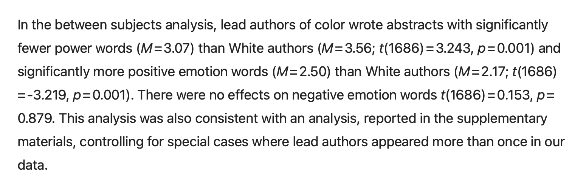
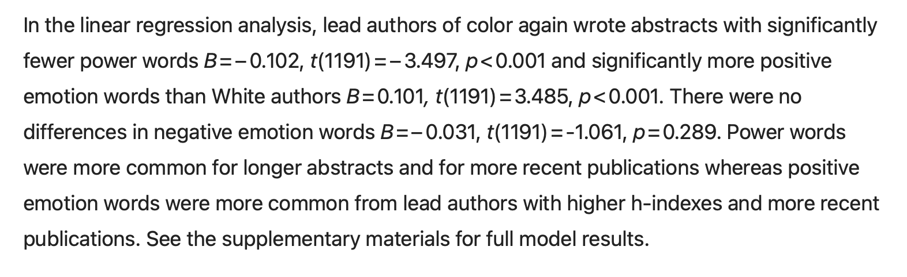

Lab 7 - Multiple Regression & Power
Problem 1. More Regression, More Predictors, More Power.
Choose a DV from a dataset (either the mini grad dataset, or the undergrad dataset we worked with this week would be easy datasets to work with.) Identify 2 independent variables that you think will help you predict this DV. Before you analyze the data, write out specific predictions about the relationship(s) you expect for the relationship between IV1 and the DV, IV2 and the DV, and how these relationships might change in a multiple regression.
Define a series of linear models to predict the DV from each IV (separately, and then together in a linear model with two IVs.) Include a regression table to summarize these data, and report the intercept, slope(s), standard error, t-test, and p-value for each coefficient, and \(R^2\) for the model. You can either create a table manually in quarto, or - if you want to spend more time on this Lab - there are ways to have R generate “publication ready” regression tables for you that might save you time in the long run.
Below the table, report what you observe about the relationships between each variable as you would in a paper, and any other comments or observations about the fit of the model.
Finally, choose one statistic you most care about, and report i) the power that you had to detect this effect in the model, and ii) the sample size that you would need to have 80% power. (Note : we ran out of time to talk about how to do ii; prof. will try to record a video / add this to the notes; but you can play around with the
pwrfunctions to calculate n given an effect size, power, and alpha.)
Problem 2. Back to the Mini Exam.
The remaining questions from this lab ask you to recreate and interpret some of the analyses from the “Interrogating Objectivity” article that we read (and whose data we worked with for the “Mini Exam”.)
The authors report the results of a between subject analyses:

This is really just the results of a linear regression where the categorical variable pocu has been dummy coded. Convert pocu to a categorical factor, and use this dummy-coded variable in three separate linear models that predict the number of power words, the number of positive emotion words, and the nubmer of negative emotion words used in an abstract. You should be able to recreate the analyses from the text above.
Problem 3. Alternative Coding Schemes.
The linear regression for Problem 2 defaults to dummy coded variables which you can use to report the predicted values of the DV for authors of color and white authors. In the paper, the authors report that they have coded scholars of color (“1”), and White scholars (“-1”). This is a form of “effect coding” called “sum coding” or “deviation coding”; you can read more these coding schemes here or here is another example - note this is a clear example of the default tendency to use white people as the reference group.
See how the linear model (where you predict power words from pocu) changes from the dummy coded pocu variable to one that has been effect coded. You can do this by creating a copy of the pocu categorical factor and re-level the variable to have values of -1 and 1, using one of the methods described in the links above, or specifying the contrasts as an argument in the lm function.
In your own words, interpret the intercept and slope from this effect coded model. Which interpretation (dummy coded from P2 or effect coded in this problem) makes more sense? Do you feel like “effect coding” de-emphasizes the reference category, as described in last week’s reading?
Problem 4. Multiple Regression Problems

In the next paragraph, the authors describe linear regression analyses where they predict the same three DVs (power, positive emotion words, and negative emotion words) from author race, controlling for several other variables : “word count, journal impact factor, author h-index (a correlate of author status), and publication year”. You can access the full supplementary regression tables here.
Define three separate models to recreate the authors’ analyses in R. The authors report standardized (z-scored) slopes; you can do this by using the scale function to transform each numeric variable in the linear model. The authors use the “effect coded” categorical pocu variable that you created in Problem 3. Note : I was not able to perfectly replicate the authors regression coefficients (though did replicate the t-tests and p-values they reported). I’m not sure if this is a software issue, publication error, or something else. But a good example of why it’s important to share not only data but code as well. Let me know if you get a perfect replication of the tables though!